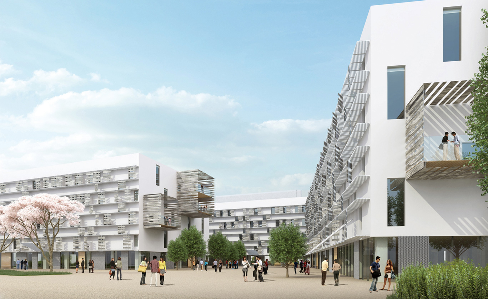

赤羽台キャンパスにあるINIAD は最先端のIoT 技術により、様々な設備や機器をネットワークに接続し、それらをキャンパスの状況に合わせて協調動作することで、人々に最適な環境を与え、使用エネルギーの最適化を図ります。このように設備や機器を空間の状況に合わせて最適制御するというコンセプトは、坂村健学部長がプロジェクトリーダーを務めるTRON プロジェクトの目指すところであり、赤羽台キャンパスにはこの研究成果を取り入れた未来のキャンパスを実現しています。
